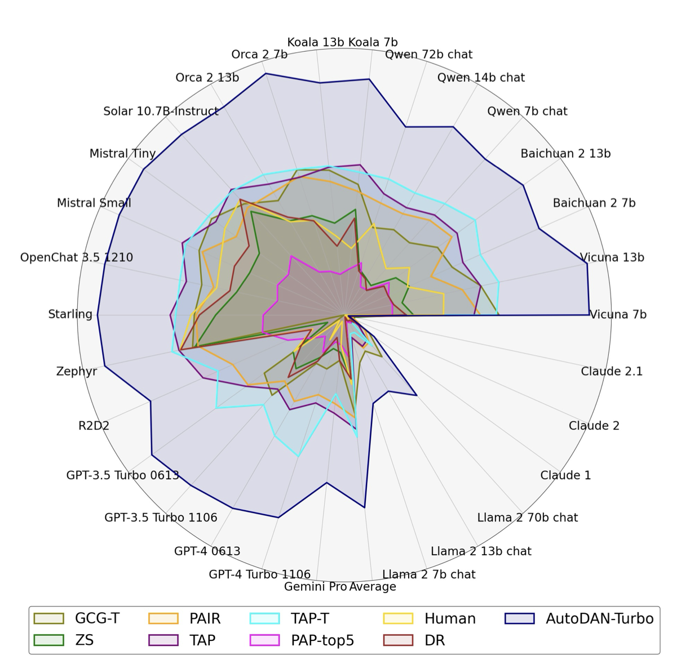
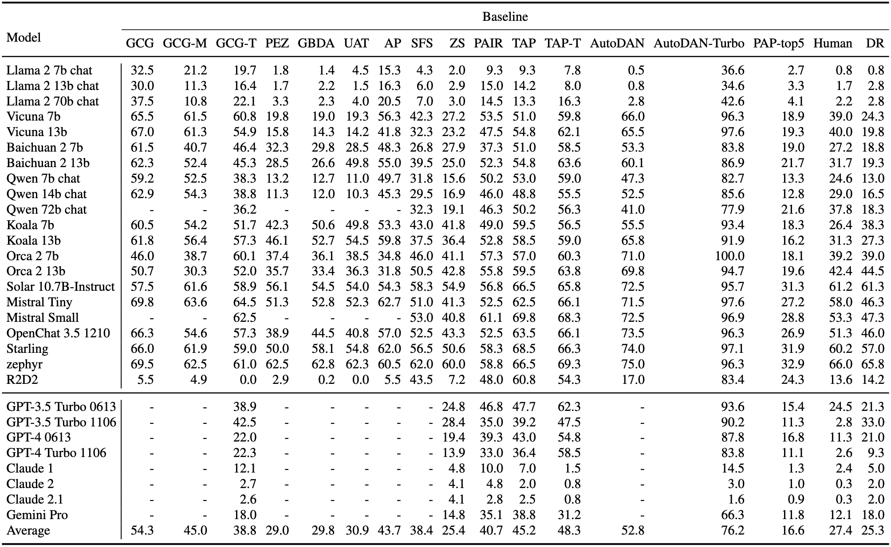

Figure 1: AutoDAN-Turbo Pipeline
Outstanding Highlights and Properties
Automatic Strategy Discovery
AutoDAN-Turbo consistently innovates and evolves effective jailbreak strategies through relentless attempts, all without human intervention or reliance on predefined strategies. The system learns from previously discovered strategies, enhancing its ability to devise even more powerful and efficient strategies over time. A noteworthy feature of our advanced, fully automated pipeline is its capability to automatically convert discovered strategies into a specific data structure. This structure is then incorporated into a strategy library, which AutoDAN-Turbo can reference and utilize in future jailbreak attempts. This system exemplifies the power of autonomous learning and adaptation in the pursuit of continual improvement.External Strategy Compatibility
AutoDAN-Turbo is a unified framework equipped with a plug-and-play feature that seamlessly integrates externally provided strategies into its own strategy library. Intriguingly, AutoDAN-Turbo not only utilizes these external strategies proficiently but also draws inspiration from them, leading to the discovery of novel, robust, and highly efficient jailbreaking methods.Practical Usage
AutoDAN-Turbo operates as a black-box system, requiring access only to the outputs of the Large Language Models (LLMs) and does not necessitate any interaction with the underlying LLM infrastructure.As demonstrated in our video, AutoDAN-Turbo persistently attempts jailbreaking against various malicious requests. Throughout this ongoing endeavor, it progressively evolves and refines increasingly complex jailbreak strategies. Remarkably, this entire process is fully automated, devoid of human intervention.
Core Components and Operational Mechanism
AutoDAN-Turbo contains three components as shown in Figure 1:
- Attack Generation and Exploration Module
- generates jailbreak prompt to attack the target LLM by leveraging the strategies provided by Jailbreak Strategy Retrival Module
- constructs the attack log for Strategy Library Construction Module to extract the strategies
- Strategy Library Construction Module
- extracts strategies from the attack logs generated in Attack Generation and Exploration Module
- saves new evolved strategy into the Strategy Library
- Jailbreak Strategy Retrieval Module
- supports the Attack Generation and Exploration Module to retrieve the strategy from the strategy library constructed by Strategy Library Construction Module so that the retrieved jailbreak strategy can guide the jailbreak prompt generation to attack the victim LLMs.
Attack Generation and Exploration Module
Three LLMs are involved in this module: an attacker LLM, a Target LLM (the victim model we want to jailbreak), and a scorer LLM. Specifically, the attack loop contains the following steps:
- Attack Generation: The attacker LLM receives specific prompts that describe the malicious request M and encourages the attacker LLM to generate a jailbreak prompt using specific jailbreak strategies. Then the attacker LLM then generates the jailbreak prompt P.
- Target Response: Upon receiving P as input, the target LLM generates a response R.
- Scorer Evaluation: The response R is then evaluated by the scorer LLM. This evaluation determines whether the response meets the malicious goal of the jailbreak attack. The scorer LLM returns a numerical score S based on predefined criteria: The scores range from 1, indicating no alignment with malicious intent, to 10, representing full compliance with harmful directives.
Strategy Library Construction Module
Since the goal of our framework is to automatically construct strategies from scratch, for efficiency, we design two stage methods:
- Warm-up Exploration Stage: In the warm-up exploration stage, each malicious request undergoes multiple iterations in the Attack Generation and Exploration Module. This results in an attack log containing the attack prompt, target response, and score for each iteration. From this log, we extract strategies that led to a score improvement. A summarizer Large Language Model (LLM) provides a description and concise definition of the strategy, formatted into a JSON object, which includes the strategy name, definition, and an example. To organize the strategy library for efficient retrieval, a text embedding model is used to convert the target response into a key. The value consists of the attack prompt, next attack prompt, and score differential. This process is repeated with different malicious requests, adding the key and value to the strategy library. For more details
- Running-time Lifelong Learning Stage: AutoDAN-Turbo employs a persistent learning approach at the running stage, following an initial warm-up strategy, to enhance our strategy library. This involves performing iterative attack loops on a dataset of multiple malicious requests until a termination condition is met. In each iteration, an Attack Generation module formulates a new attack strategy based on previous responses, which can be stored for future use in the strategy library. This process continues until a score threshold is met or a maximum iteration limit is reached, ensuring efficient and robust strategy augmentation. For more details

Figure 2: Skeleton of the Strategy Library
Jailbreak Strategy Retrieval Module
Our framework retrieves jailbreak strategies from a library and prompts an attacker learning language model (LLM) to generate jailbreak prompts. Given a malicious request, we process it through a generation and exploration module to get a response, which is then transformed into an embedding vector. This vector is compared with all keys in the strategy library, and the top strategies leading to the highest score differences are selected. These strategies form a list that is inserted into the attacker LLM's prompt for the next attack iteration. Strategies are categorized as effective, less effective, or ineffective based on their scores, and are used accordingly in the prompts. If no strategies are available, an empty strategy is provided to the attacker LLM.
Evaluation and More Functionalities
During the Evaluation phase of AutoDAN-Turbo, the strategy library is solidified, and we cease to utilize the summarizer Large Language Model (LLM) to extract and preserve strategies from attack logs.
AutoDAN-Turbo outperforms other black-box baselines in Harmbench.
As depicted in Figure 3, we conducted a comprehensive comparison of AutoDAN-Turbo with other baseline methods in terms of attack effectiveness on Harmbench. Notably, AutoDAN-Turbo consistently outperforms the baselines, demonstrating superior attack performance against varying Target LLMs.
Transferability of Strategy Library
AutoDAN-Turbo develops a strategy library that exhibits strong transferability across different attacker and target LLMs. This library, initially established using Llama-2-7B-chat as the attacker, target, and scorer, contains 21 jailbreak strategies. We test the library's effectiveness in two scenarios: a static library use, and a continual learning mode where the library is updated with new attack logs. The results consistently show high effectiveness, indicating that strategies developed for one model can be employed by other LLM jailbreak attackers. Furthermore, the library dynamically improves under continual learning settings, affirming our model's ability to evolve and adapt.Table 1: Transferability of strategy library across different attacker and target LLMs
Compatibility of Human-developed Strategy
AutoDAN-Turbo is a unified framework that seamlessly incorporates human-designed jailbreak strategies in a plug-and-play manner. It has been tested with strategies from various academic sources and has demonstrated improved performance. The framework has two key stages for injecting these strategies: at the start when the strategy library is empty (Breakpoint 1) and after 3000 iterations without generating new strategies (Breakpoint 2). The integration of these human-designed strategies has consistently boosted the quantity and quality of strategies in our library, particularly when introduced at the second stage, allowing more complex jailbreak strategy combinations to be generated.
Table 2: The attack performance of AutoDAN-Turbo when external human-designed strategies are injected into the framework
Harmbench Baseline Results
Here, we present the Harmbench baseline results, inclusive of AutoDAN-Turbo's performance. Harmbench employs the Attack Success Rate (ASR) as a measure to characterize the jailbreak performance across different baselines. 
Table 3: AutoDAN-Turbo is the state-of-art attack in Harmbench
AutoDAN-Turbo Dataset Access
During the continuous progression of AutoDAN-Turbo, numerous jailbreak attempts are made against varied malicious requests. This relentless process invariably results in the generation of a substantial volume of text, some of which contain harmful information and employ unethical persuasion techniques. To prevent potential societal harm emanating from the data within the AutoDAN-Turbo Dataset, it is mandatory to complete a specific form to gain access to AutoDAN-Turbo. This safeguard ensures responsible and ethical usage of the system.
To access AutoDAN-Turbo Dataset, please fill this form.